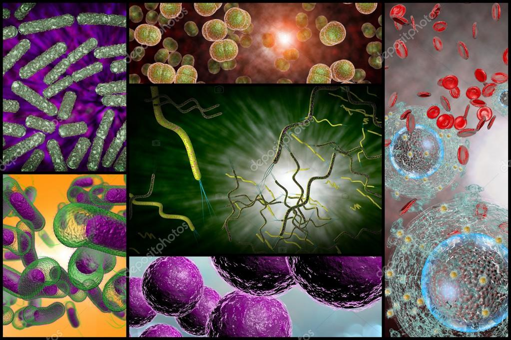
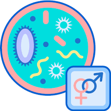

¿Qué son las enfermedades de transmisión sexual (ETS)?
Son infecciones que se transmiten de una persona a otra durante una relación
sexual. Pueden ser producto de más de treinta tipos de virus, bacterias y parásitos
Las más frecuentes son: la sífilis, la gonorrea, la clamidia, el Virus del Papiloma
Humano (VPH), las hepatitis B y C, el VIH. Afectan a todas las personas: varones,
mujeres de cualquier edad y orientación sexual.
Los Principales síntomas de las ITS son:
•Lastimaduras en la zona genital, con o sin dolor.
•Secreciones de pus en los genitales (vagina y pene) o en el ano.
•Ardor al orinar.
•Flujo genital u anal diferente al habitual.
•Dolor en la parte baja del abdomen.
•Lesiones en la boca o manchas en la piel.
•Verrugas genitales.
La mayoría de las ITS se pueden prevenir usando preservativo (masculino o femenino) o campo de látex desde el comienzo y durante toda la relación sexual.
El Calendario Nacional de Vacunación incluye la vacuna contra la hepatitis B para toda la población y contra el VPH para niños de 11 años y niñas nacidas a partir del año 2000.
La mayoría de estas infecciones son tratables, y muchas de ellas pueden curarse. Si no se tratan pueden producir, de acuerdo al tipo de infección, diferentes problemas de salud:
•Infertilidad tanto en hombres como en mujeres.
•Dolor crónico en la pelvis.
•Predisposición o mayor riesgo de tener embarazo ectópico (en una trompa).
•Problemas neurológicos.
•Pueden aumentar la posibilidad de adquirir VIH.
•El VPH no tratado puede relacionarse con algún tipo de cáncer.
•Algunas pueden pasar al bebé durante el embarazo, parto o cuando se amamanta.
•Algunas pueden presentar cuadros generalizados (cuyas consecuencias se expresan en todo el cuerpo).

Ejemplos:
•Clamidia.
•Herpes genital.
•Gonorrea.
•VIH y sida.
•VPH.
•Ladillas.
•Sífilis.
•Tricomoniasis.
4 de estas afecciones tienen tratamiento y cura y son la gonorrea, la clamidia, la tricomoniasis y la sífilis. Hay otras 4 ETS que también son causadas por virus, pero en este caso no tienen cura.
Las siglas ITS se emplean para referirse a las Infecciones de Transmisión Sexual, las que, como su nombre indica, se transmiten entre otras formas, por medio de las relaciones sexuales (anales, vaginales u orales)
y pueden ser causadas por bacterias, virus, hongos, parásitos y protozoos. La mayoría de los casos en los que hay una infección de transmisión sexual no aparecen síntomas o son poco expresivos,
lo cual facilita la transmisión de la infección y, si no se instaura el tratamiento adecuado, pueden aparecer complicaciones como esterilidad, embarazo extrauterino, cáncer genital u otros.
Hay que tener en cuenta que el aumento de la inmigración entre las personas que trabajan en la prostitución debe hacernos pensar en infecciones que hasta ahora eran poco frecuentes en nuestro medio.
Las Infecciones de Transmisión Sexual (ITS) son infecciones que pasan de una persona a otra durante una relación sexual (vaginal, anal u oral) y pueden producir enfermedades.
Las Infecciones de Transmisión Sexual (ITS), como su nombre lo indica, son infecciones que pasan de una persona a otra durante una relación sexual (vaginal, anal u oral) y pueden producir enfermedades. Anteriormente se las conocía como enfermedades venéreas. Son causadas por virus, bacterias o parásitos.
Las más frecuentes son:
•sífilis
•gonorrea
•clamidia
•herpes simple
•hepatitis B
•hepatitis C
•HPV
•VIH
Las ITS pueden afectar a cualquier persona sin importar su sexo, orientación sexual o edad.
Gran parte de las ITS se curan con tratamientos específicos, que en muchos casos son muy sencillos. Otras, como el herpes simple y el VIH se pueden tratar, controlar y convertirse en infecciones crónicas.
Síntomas:
Al principio una llaga o ampolla dura (generalmente una sola) en la boca, el ano, la vagina o el pene, que no produce dolor y que desaparece sola a los 15 días, aunque no se haga tratamiento. Esto no significa que la infección se haya terminado.
Muchas veces, cerca de donde está la lesión, hay un ganglio que se inflama.
Algunos meses más tarde, si no se hace tratamiento pueden aparecer erupción (o ronchas) en el cuerpo, lesiones en la boca, fiebre e inflamación de los ganglios, caída del cabello, malestar general, verrugas o condilomas en la zona genital.
Tratamiento:
La sífilis se cura con un tratamiento que es sencillo y está disponible en todos los centros de salud y hospitales. Se trata de la aplicación de penicilina en una o más dosis de acuerdo con la etapa de la sífilis en la que encuentre la persona.
También se recomienda tratar a la/s pareja/s sexual/es.
En términos generales, las enfermedades de transmisión sexual más comunes son Sida, sífilis, gonorrea, clamidia y virus papiloma humano o HPV. De acuerdo a la División de la Prevención y Control de Enfermedades del Ministerio de Salud; la sífilis se incrementó en un 42,3% entre los años 2017 al 2018.
Las 8 ETS más frecuentes:
•Clamidia.
•Gonorrea.
•Sífilis.
•Herpes genital.
•VIH / SIDA.
•Triconomiasis.
•Condilomas (HPV)
•Candidiasis.
Los CDC indican que las relaciones sexuales anales, sin importar el género de una persona, es el acto sexual que implica el mayor riesgo. La probabilidad de contraer VIH a través del sexo anal es la siguiente: relaciones sexuales anales receptivas: 1.38 por ciento. relaciones sexuales con penetración: 0.11 por ciento.
No es necesario tener relaciones sexuales para contagiarse de alguna ETS.
Por ejemplo, con los simples juegos preliminares, como rozarse con los genitales, pueden transmitirse enfermedades como la clamidia, la gonorrea o el SIDA, ya sea por el líquido preseminal del pene, como por los flujos vaginales de la mujer.
Para proseguir con las ETS, la duración media de la infección y por tanto de la propagación varía mucho según el germen. La gonorrea o sífilis suelen tener un período de transmisión corto de días o semanas frente al Herpes genital o el HPV que pueden ser persistentes y transmisibles durante meses o incluso años.
Los virus o las bacterias que ocasionan las ETS pueden ingresar al organismo a través de pequeños cortes o desgarros en la boca y el ano, así como también en los genitales.
Algunas ETS, como el herpes o las verrugas genitales, pueden transmitirse a través del contacto de la piel con una zona infectada o con úlceras.
Los virus como el VIH, el herpes genital, el virus del papiloma humano, la hepatitis y el citomegalovirus causan STD/STI que no tienen cura.
Bacterias como la del estafilococo pueden causar infecciones en la piel; bacterias fecales, herpes, VPH son capaces de soportar el calor mientras te das unos rayos. Si la cabina no está bien desinfectada y alguien lo tenía, se ha bronceado y ha dejado restos, tienes muchas posibilidades de contraerlo.
¿Debería hacerme los exámenes de las enfermedades de transmisión sexual?
La mayoría de las veces, las enfermedades de transmisión sexual (ETS) no tienen síntomas. La única manera de saber con seguridad si tienes una ETS es hacerte exámenes. Entonces, si tuviste algún tipo de contacto sexual, habla con tu doctor@ o enfermer@ acerca de hacerte pruebas de detección. También es recomendable tener sexo seguro (sexo más seguro) para prevenir su contagio.
•Aprende
•Obtén Atención
•Participa
•Buscar
•Inicio Aprende Enfermedades de transmisión sexual (enfermedades venéreas) Vigente:Hacerse los exámenes de las ETS
•Hacerse los exámenes de las enfermedades de transmisión sexual
•En esta sección
•Detección de ITS | Planned Parenthood Video
•Planned Parenthood YouTube Channel
•Detección de ITS | Planned Parenthood Video

¿Debería hacerme los exámenes de las enfermedades de transmisión sexual?
La mayoría de las veces, las enfermedades de transmisión sexual (ETS) no tienen síntomas. La única manera de saber con seguridad si tienes una ETS es hacerte exámenes. Entonces, si tuviste algún tipo de contacto sexual, habla con tu doctorx o enfermerx acerca de hacerte pruebas de detección. También es recomendable tener sexo seguro (sexo más seguro) para prevenir su contagio.
¿Quieres hacerte los exámenes de las ETS? Encuentra un centro de salud
Creo que tengo síntomas de una enfermedad de transmisión sexual. ¿Debo hacerme exámenes?
Si tuviste contacto sexual (sexo) con otra persona y notas alguna señal de una enfermedad de transmisión sexual (ETS), consulta con unx doctorx o enfermerx acerca de hacerte los exámenes. Los síntomas de las infecciones de transmisión sexual (ITS) pueden aparecer y desaparecer con el tiempo, pero eso no quiere decir que la enfermedad se haya ido.
Es común que los síntomas de las ITS sean muy leves y que no te molesten, pero de todas maneras debes ir donde unx doctorx o enfermerx si tienes algo que te parece extraño.
Todas las enfermedades de transmisión sexual (ETS) tienen síntomas diferentes. Las señales de ETS incluyen:
•tener llagas o bultos en los genitales, muslos o nalgas o alrededor de estos.
•fluido (liquido) raro saliendo de tu vagina o pene
•ardor al orinar (hacer pipí) y/o necesidad de orinar todo el tiempo
•picazón, dolor, irritación y/o hinchazón en tu pene, vagina, vulva o ano
•síntomas parecidos a los de la gripe como fiebre, dolor en el cuerpo, glándulas inflamadas y cansancio
•Todos estos síntomas pueden ser causados por otras condiciones que no son ETS (como granos, infecciones urinarias (UTIs), e infecciones vaginales por hongos). Por eso, la única manera de saber con seguridad lo que está pasando es hacerte pruebas. Tu doctor@ o enfermerx te ayudará a saber qué tipo de exámenes o tratamientos necesitas. Cuando hables con ellxs cuéntales acerca de:

•si tienes algún síntoma y qué has notado
•qué tipo de sexo tuviste (vaginal, anal u oral), o cualquier otra actividad donde hayas tenido contacto piel a piel de los genitales o de fluidos sexuales.
•si usaste o no condones y/o barreras bucales (dentales) de látex
•Es muy importante que te hagas exámenes si crees que tienes una ETS, porque algunas de estas enfermedades pueden causar problemas de salud graves si no se tratan. Además, tener una ETS aumenta la probabilidad de que te contagies de otras como el VIH. Es mejor saber enseguida si tienes una ETS para no contagiar a otras personas.
•La idea de hacerse pruebas de detección puede asustar un poco, pero trata de tomarlo con calma. La mayoría de las infecciones de transmisión sexual (ITS) comunes se curan fácilmente con medicamentos. Para las que no se pueden curar, suelen existir tratamientos para aliviar los síntomas y bajar el chance de que se las contagies a otras personas.
De modo que entre más rápido sepas si tienes una enfermedad de transmisión sexual (ETS), más rápido podrás comenzar a cuidarte y cuidar a tu(s) pareja(s) sexual(es).
Si no tengo síntomas, ¿debo hacerme las pruebas de todos modos?
No puedes saber con certeza si tienes una ETS solo por cómo te ves o cómo te sientes. La mayoría de las veces, las personas que tienen una ETS no tienen síntomas. De modo que la única manera de saber con seguridad si tú (o tu pareja sexual) tienen una, es hacerse los exámenes.
Es super importante que te hagas las pruebas si tuviste sexo sin protección o si te enteras de que tu pareja sexual tiene una enfermedad de transmisión sexual (ETS). Unx doctorx o enfermerx podrá decirte si debes o no hacerte exámenes.
Si tienes una enfermedad de transmisión sexual (ETS), es mejor saberlo cuanto antes. Algunas ETS pueden causar daños graves con el tiempo, a pesar de que al principio te sientas perfectamente bien. Las ETS también pueden transmitirse a otras personas con quienes tengas relaciones, sin importar si tienes síntomas o no. Tener sexo seguro (sexo más seguro) es una buena manera de prevenir su contagio.
¿Sabes qué es lo mejor de hacerte exámenes de las ETS? Que una vez te los hagas, puedes dejar de pensar en eso. Hacerte pruebas regularmente es parte de ser responsable y cuidar de ti. Además, los exámenes de las ETS muchas veces son rápidos, puede que no duelan y a veces incluso son gratuitos.
¿Que es una campaña de concientización?
Todas las campañas de concientización aspiran a influir en el comportamiento y, por ende, son de utilidad para comprender en qué medida éste se ve influido por la comunicación. Por lo general, las campañas se ocupan principalmente de proveer información y conocimiento para influir en las actitudes de las personas.
¿Impacto que crea en la gente al saber?
La mayor parte de estas infecciones son asintomáticas. Afectan a la sociedad en todos los niveles sociales con más frecuencia a adultos jóvenes entre 15 y 49 años, causan muerte prenatal, neonatal, prematuridad, cáncer de cuello uterino e infertilidad en la mujer.
Poder tener una vida sexual plena sin el temor de adquirir una enfermedad de transmisión sexual (ETS) es muy importante y por lo tanto, estar bien informadas es fundamental para nuestra salud sexual y reproductiva. ¿Qué son? Son infecciones que se transmiten mediante las relaciones sexuales sin protección.
Inicio -
Nosotros -
Contactos
Copyright
2022
Manda mensaje via email a
VIH_COVID-19@salud.gob.mx
|